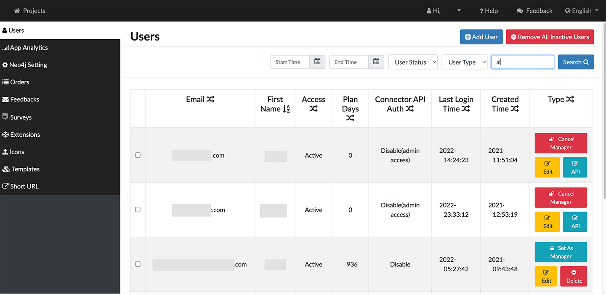

On-Prem GraphXR Installation For Enterprise users working with GraphXR in a secure environment, on-premises installation options include: Installation using Docker Install with a Docker Zip file Install with persistent storage Update or re-install GraphXR Individual GraphXR users can simply go to the browser, create an account and log in. Installation as such is not needed. Basic Docker Install To install GraphXR from docker: Login to the docker hub docker login --username=<username> --password=<password> docker login --username=<username> --password=<password> Pull the GraphXR image (i.e. the executable). docker pull <binary image name> The database items will be downloaded. When completed, a status message displays. Run the docker container with the GraphXR executable. docker run -d -it --name graphxr --restart always -e "ADMIN_EMAIL=<Admin Email>" -p 8080:9000 <binary image name> The port numbers must be set to 8080:9000. On completion, the GraphXR server is running and has established your Admin account, which is now ready for configuration. For security, GraphXR sets cookie security to true. Docker Install via Zip Installing using a .zip file downloaded from Docker enables onsite installation without connecting directly to Docker. This may be preferable to address additional security requirements some users may have. To install GraphXR from Docker using a .zip file: Pull the image from docker hub. docker pull kineviz/graphxr_custom:develop Save the docker image as zip file. docker save kineviz/graphxr_custom:develop > graphXR_custom_develop.tar (onsite) Import the zip file to docker. docker load < graphXR_custom_develop.tar You can use the command try to list the all images. docker images | grep kineviz (onsite) Use the docker image kineviz/graphxr_custom:develop create graphxr container. docker run -d -it --name graphxr --restart always \ -p 8080:9000 \ -v "$HOME"/projects/graphxrdata:/mnt/data:rw \ -e "ADMIN_EMAIL=graphxr@kineviz.com" \ -e "BLANK_PROJECT=true" \ kineviz/graphxr_custom:develop Install with Persistent Storage To install GraphXR with persistent storage: The tree structure for the /data volume for persistent storage is as follows: ├── config.example.js ├── config.js ├── forever │ ├── err.log │ └── logs.log ├── mongodb │ ├── db │ ├── logs │ └── mongod.conf ├── ssl │ ├── localhost.crt │ └── localhost.key └── tmp Use the following commands to install and run the GraphXR demo with persistent storage. docker run -d -it --name graphxr --restart always \ -v "$HOME"/projects/graphxrdata:/data:rw \ -e "ADMIN_EMAIL=graphxr@kineviz.com" \ -p 8080:9000 \ kineviz/graphxr:demo // $HOME specifies the data volume and grants read-write privileges. Update or Reinstall GraphXR To recreate or update your GraphXR installation, the basic steps are: Log in to docker and pull the GraphXR binary. Stop running the current version. Remove the current version. Install the updated version you just pulled. To reinstall or update GraphXR: Login to the docker hub. docker login --username=<username> --password=<password> Run the following commands to pull the GraphXR binary you need, stop and remove the current version, and install the new one. For an installation without persistent storage: docker pull <binary image name> \ && \ docker stop graphxr \ && \ docker rm graphxr \ docker run -d -it --name graphxr --restart always \ -e "ADMIN_EMAIL=<Admin Email>" \ -p 8080:9000 \ <binary image name> For an installation with persistent storage: docker pull <binary image name> \ && \ docker stop graphxr \ && \ docker rm graphxr \ && \ docker run -d -it --name graphxr --restart always \ -v "$HOME"/projects/graphxrdata:/data:rw \ -e "ADMIN_EMAIL=<Admin Email>" \ -p 8080:9000 \ <binary image name> // $HOME specifies the data volume and grants read-write privileges. Create or Update the Admin account An admin account is set up and registered during installation. Information needed to register the Admin user: Admin Email address you want to use. Admin Password and Confirm Password First Name, Last Name, and City Once the admin account is registered, an admin user can select Admin from the user dropdown menu to open the Admin panel. 